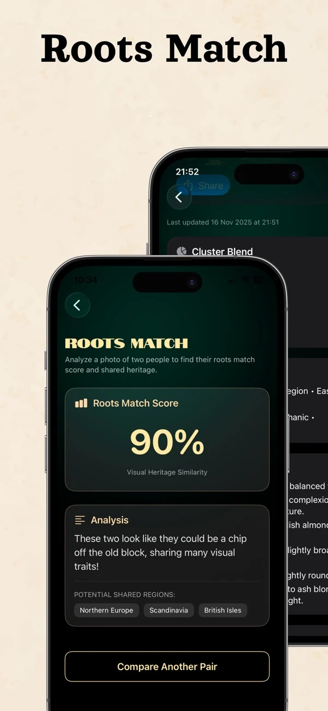

A practical walkthrough of the published app interface
Choose a clear photo you have permission to use, select the feature you want to explore, and review any purchase confirmation before generating a result. The app is free to download with in-app purchases; the current offer in your installed version determines the price and report limits. Processing time depends on the feature and service conditions.

- Two-photo comparison: the feature presents a visual heritage comparison.
- Similarity score: the example's 90% is an app score, not shared DNA and not the probability that two people are relatives.
- Analysis text: use it as an entertainment narrative; it does not verify a relationship or lineage.
Publisher screenshot from the official App Store listing, checked October 13, 2026. Screens and feature availability can differ by version and platform.
Other published screens include regional reports and maps, Historical Twin portraits, Family Circle and weekly insights. Historical Twin is a creative look-alike experience; Family Circle groups visual reports rather than building a verified genealogy. Read the accuracy and interpretation guide before treating any label as a personal fact.
Choose the iPhone and iPad App Store listing or the Android Google Play listing for current compatibility and purchase details. For the meaning of the labels, read what ethnicity you may appear to resemble and why a country label cannot establish nationality.
An AI face ethnicity test is a fun way to explore what ethnic, ancestry, or regional appearance patterns your face may resemble.
Instead of answering questions about your family tree, you simply upload a selfie. The AI analyzes your facial features and suggests possible heritage vibes based on your appearance.
It cannot replace a DNA test. It cannot prove your ethnicity. But it can give you an interesting look at how your face may be perceived and which ancestry patterns people might associate with you.
If you have ever searched:
- "What ethnicity do I look like?"
- "What nationality do I look like?"
- "What country do I look like I'm from?"
- "Can AI guess my ethnicity from my face?"
Then an AI face ethnicity test may be exactly what you are looking for.
What Is an AI Face Ethnicity Test?
An AI face ethnicity test is a tool that uses artificial intelligence to analyze a photo of your face and suggest which ethnic or regional appearance patterns you may resemble.
The AI may look at:
- Face shape and overall facial proportions
- Eye shape and spacing
- Nose shape and structure
- Cheekbones and jawline
- Skin tone and hair color
- Visual similarity to regional appearance patterns
Then it creates a result that may include ethnicity, ancestry, nationality, or regional appearance suggestions. For example, the result may suggest that someone visually resembles a mix of Mediterranean, Celtic, Eastern European, Middle Eastern, South Asian, East Asian, Latin American, or other regional patterns.
How Does an AI Ethnicity Test by Photo Work?
The process is simple:
- Upload a selfie — Choose a clear photo where your face is visible.
- AI analyzes your facial features — The AI looks at visual patterns in your face.
- You get a heritage-style result — The app gives you a fun interpretation of what ethnic or ancestry patterns your face may resemble.
- Compare and share — Compare the result with your real family background, DNA test, or what people usually guess.
AI Face Ethnicity Test vs. DNA Test
Many people confuse AI face ethnicity tests with DNA tests, but they are very different.
| Feature | AI Face Ethnicity Test | DNA Test |
|---|---|---|
| Uses a selfie | Yes | No |
| Uses saliva sample | No | Yes |
| Gives fast result | Yes | Usually no |
| Shows visual similarity | Yes | No |
| Estimates genetic ancestry | No | Yes |
| Good for social sharing | Yes | Sometimes |
| Scientific ancestry evidence | No | More reliable |
An AI face test answers: "What ethnicity do I look like?"
A DNA test answers: "What ancestry did I inherit genetically?"
Both can be interesting, but they should not be treated as the same thing.
Related: AI Ancestry Test vs DNA Test: What's the Difference? →Why AI Ethnicity Tests Are So Popular
AI ethnicity tests are popular because they combine identity, curiosity, and surprise. People love them because they are fast, visual, easy to share, and great for TikTok and Instagram. A simple result can make people ask:
- "Do I really look like that?"
- "Would you have guessed this?"
- "Why does everyone think I'm from that country?"
- "Could this be from my grandparents?"
- "Does my face show mixed roots?"
This emotional curiosity is what makes AI face heritage content so engaging.
Discover Your Face Heritage with Ancestor Lens
Upload your selfie and discover what ethnicity, nationality, or ancestry patterns your face may resemble.
Can AI Detect Mixed Ethnicity?
AI may suggest that your face visually resembles multiple regions or ethnic groups. This can happen because many people have mixed features, even if they identify with one nationality or culture. For example:
- A Greek person may visually resemble Turkish, Balkan, Italian, or Armenian patterns.
- An Irish person may have Spanish, French, or Scandinavian-looking features.
- A Mexican person may resemble Spanish, Indigenous, Italian, or Middle Eastern patterns.
- A Polish person may resemble Ukrainian, Baltic, German, or Balkan patterns.
- An American person may have many different ancestry influences.
Mixed appearance is extremely common. The result does not prove your DNA, but it may reflect how your features are visually interpreted.
Best Photo for an AI Face Ethnicity Test
For the best experience, use a photo that shows your face clearly.
Good photo:
- Clear front-facing selfie
- Natural daylight
- Neutral expression
- No sunglasses or heavy filters
- No face-covering hair or accessories
- One person in the image
Bad photo:
- Group photo or side profile
- Blurry image or dark lighting
- Strong beauty filter or extreme angle
- Face covered by hat or glasses
Social Media Caption Ideas
- "AI guessed my ethnicity from my face. Would you agree?"
- "What ethnicity do I look like? Be honest."
- "I uploaded my selfie to an AI face ethnicity test…"
- "Everyone guesses my nationality wrong. Here's what AI said."
- "My ancestry result surprised me."
- "Would you guess my roots from my face?"
- "AI thinks I look like these countries."
Frequently Asked Questions
Explore More About Your Ancestry
Want to go deeper into your origins? Explore more guides:
- 👉 What Ethnicity Do I Look Like? Try an AI Face Heritage Test
- 👉 What Nationality Do I Look Like? AI Face Nationality Guess
- 👉 Can AI Guess Your Ethnicity From a Photo?
- 👉 What Does Your Face Say About Your Ancestry?
- 👉 AI Ancestry Test vs DNA Test: What's the Difference?
- 👉 Why AI Ancestry Results Are Going Viral on TikTok
- 👉 Learn how accurate AI ethnicity tests are and what results mean
- 👉 Read our photo tips for a clearer result and best face analysis
Ready to Discover Your Own Story?
You're not here for data — you're here for a story about yourself.